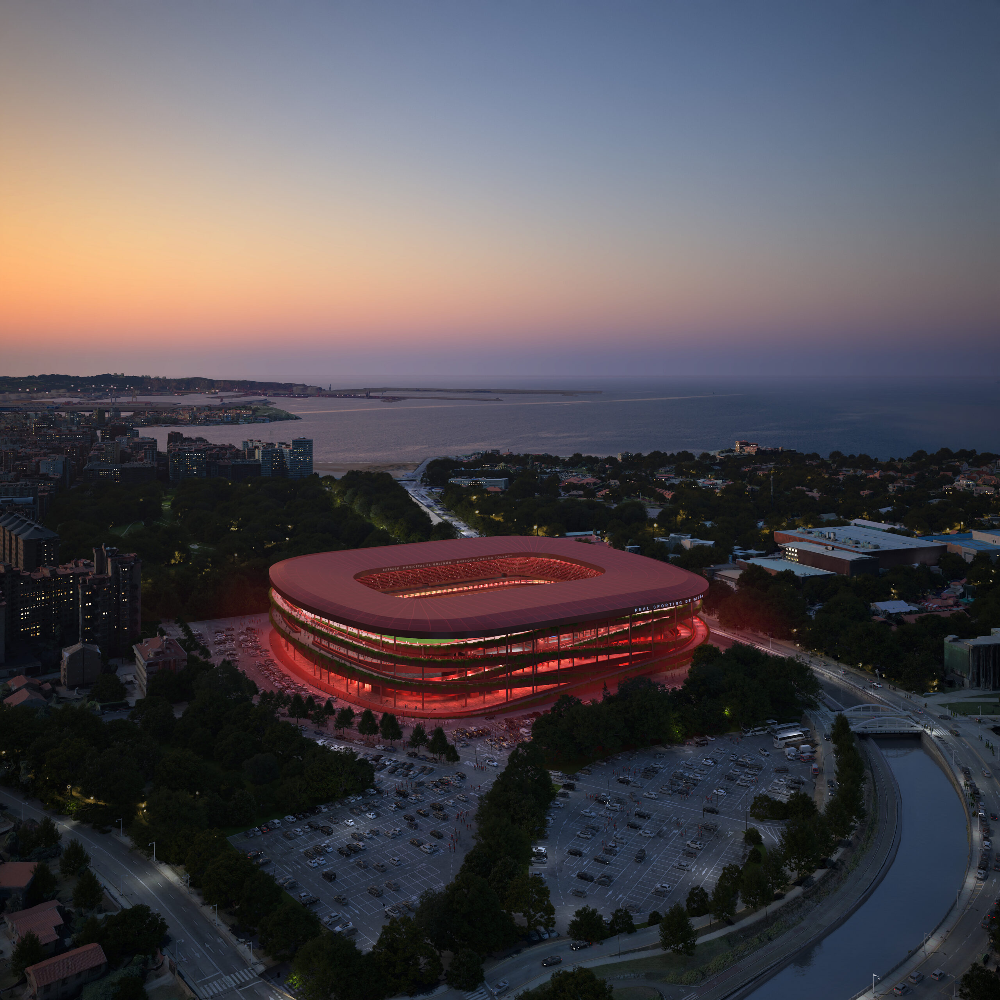

Fundado en 1985 - Futbol Amateur en Gijón, Asturias

El C.D. Gijón Atlético es un club de futbol amateur nacido en el barrio de El Llano, en Gijón. Desde
nuestros inicios hemos apostado por la Cantera
y por un fútbol Combinativo y ofensivo
Nuestro campo, el Campo Municipal de EL Piles, acoge cada fin de semana a cientos de
aficionados que poyan al primer equipo y a las categorías
inferiores.
Un breve saludo de la directiva para los nuevos socios y socias
El primer equipo suma 4 victorias y un empate en las cincos primeras jornadas, la mejor racha desde temprada 2014-2015
Con motivo del 40º aniversario del club, la entidad ha presentado una equipacion especial inspirada en la primera maciseta de 1985.